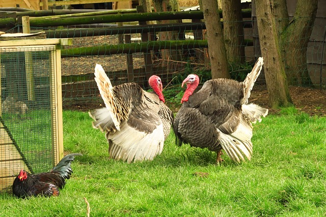
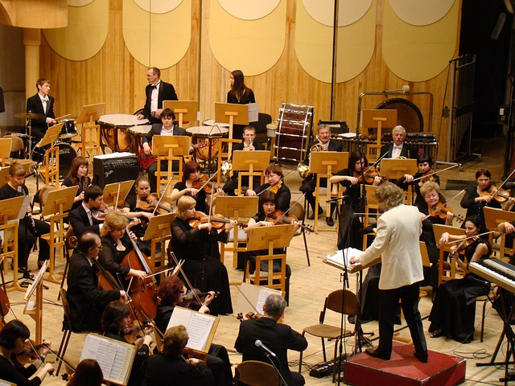
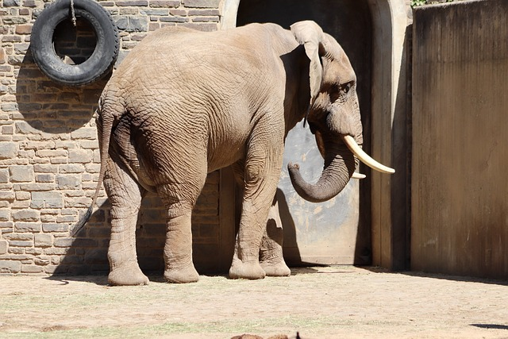
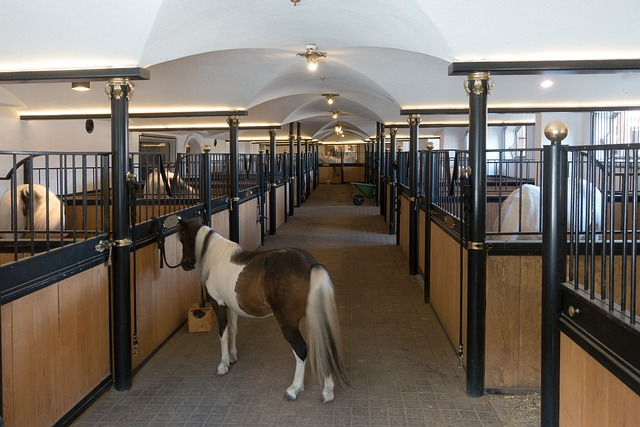
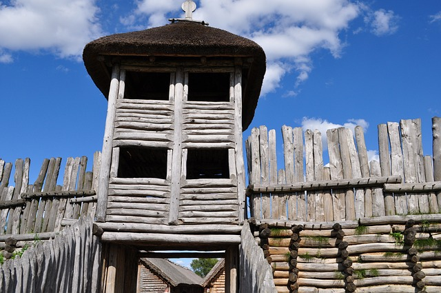

8 miejsc, które warto odwiedzić z kilkulatkiem
Małe dziecko, które poznaje nowe słowa, najlepiej uczy się ich obcując z “przedmiotem”, które to słowo oznacza. Dlatego pierwsze słowa oznaczają osoby, z którymi dziecko przebywa, ulubione zabawki (piłka, miś), proste czynności. Potem dochodzą do tego nazwy przedmiotów domowych, jedzenia, ubrania, itp. Zasób słownictwa dziecka rozszerza się wskutek poznawania coraz to nowych miejsc, osób, przedmiotów. Warto zatem jak najczęściej odwiedzać różne miejsca, które dostarczą dziecku nowych bodźców do rozwoju mowy.
Dzisiaj opiszę Wam osiem takich miejsc, które spokojnie można odwiedzić już z kilkulatkiem. Dostarczą mu one niezapomnianych wrażeń, o których będziecie mogli jeszcze długo rozmawiać.
Gospodarstwo agroturystyczne
Jeśli możemy wyjechać na kilka dni, wybierzmy miejsce, w którym dziecko pozna zwierzęta hodowlane: zobaczy konie, nakarmi kury i kaczki, pogłaszcze kota czy psa. Są takie gospodarstwa, w których można zobaczyć, jak się robi ser, odwiedzić pasiekę, wydoić krowy. Może nie na wszystko nasz maluch się odważy, ale jest to zawsze okazja do opowiedzenia mu tego, co widzi, poznania nowych słów. Wieczorami można robić kronikę wyjazdu – dziecko rysuje to, co zobaczyło danego dnia, my opisujemy. A może wspólnie ułożycie bajkę, której bohaterami będą zwierzaki? Możliwości jest mnóstwo.
Filharmonia
Nie wiem, czy wszystkie, ale nasza częstochowska filharmonia na pewno organizuje niedzielne poranki dla maluchów. Można wtedy z nimi porozmawiać o instrumentach, utworach, eleganckim stroju, zachowaniu podczas koncertu. Dzieci mogą nam powiedzieć, czy im się taka muzyka podoba, na czym chciałyby grać, mogą namalować, wykleić swój ulubiony instrument (rozwijanie sprawności manualnej), możecie wspólnie zrobić plakat z różnymi instrumentami z podziałem na smyczkowe, dęte, itp. A wieczorem posłuchać muzyki klasycznej zamiast kołysanek – z doświadczenia wiem, że się przy niej świetnie zasypia.

Ogród botaniczny
Pamiętam zachwyt moich córek nad każdą stokrotką i kaczeńcem, nad kwitnącymi magnoliami (którymi ja się zachwycam równie mocno), zapachem bzu. Ogród botaniczny dla całej naszej trójki jest fantastycznym miejscem. Kolory, formy, kształty liści, zapachy – mnóstwo rzeczy, o których można porozmawiać. A żeby nie zapomnieć, warto zrobić album – ze zdjęciami (niech dziecko spróbuje samo zrobić zdjęcia telefonem) lub szkicami (można przecież wybrać się na wycieczkę ze szkicownikiem i kredkami). Osobiście mogę polecić arboretum w Kórniku (jest to najstarsze i najbogatsze gatunkowo arboretum w Polsce, muszę tam pojechać, gdy zaczną kwitnąć magnolie), ogród botaniczny Uniwersytetu Wrocławskiego, Ogród botaniczny w Łodzi wraz z Palmiarnią. A skoro przy palmiarniach jesteśmy, to jeśli wybierzecie się do Książa (o którym niżej), to nie zapomnijcie o tamtejszej palmiarni 🙂

Zamek
Mój ukochany zamek to Zamek w Książu. Oprócz tego, że jest przepiękny, to można w Książu przepaść na cały dzień. Do zwiedzania są ogrody, tarasy, wielki park, stadnina koni. Po pierwszej wizycie młodsza wracała do niej przez kilka kolejnych miesięcy, najczęściej słowami: Mamoooo! A pamiętasz…? Miała wtedy trzy lata. Do dziś (6 lat później) pamięta, jak w sali balowej tańczyłyśmy walca 🙂 Ale wcale nie trzeba jechać do Książa. Mamy taką historię, że w każdym miejscu Polski znajdziemy jakiś zamek lub pałac do zwiedzenia. Są i takie, jak zamek w Pieskowej Skale, które są przygotowane na wizyty młodszych dzieci. Dostają tam one album z naklejkami i przechodząc z sali do sali muszą znaleźć eksponaty, których brakuje na ilustracjach, a następnie je tam dokleić. W niektórych zamkach czy twierdzach zwiedzających oprowadzają przewodnicy w strojach z epoki. Starsza córka strzelała z łuku, ma zdjęcia z pruskimi żołnierzami. Jeśli dziecko jest śmiałe, może mieć naprawdę fajne wspomnienia z takich miejsc. Wystarczy, że trochę zagada do ludzi 😉 A o czym można z dzieckiem porozmawiać? O strojach, zasadach rycerskich, uzbrojeniu, o tym, jak wyglądało życie na zamku na co dzień, co jedzono w tamtych czasach, gdzie mieszkali właściciele, gdzie ich służba, czy dzieci chodziły wtedy do przedszkola i szkoły.
ZOO
Co do tego miejsca mam mieszane uczucia. Dlaczego? Ja wiem, że dzieci mają niewielkie szanse zobaczenia z bliska żyrafy czy lwa w ich naturalnym środowisku. Ale mimo wszystko te zwierzęta żyją w niewoli, nie mają takich warunków, jakie miałyby na wolności. Dlatego jeśli wybieracie się do ZOO, wybierajcie takie miejsca, które dbają o zwierzęta, zapewniają im odpowiednie wybiegi. Osobiście byłam w jednym mini-zoo, gdzie spodziewałam się małych zwierząt, a zobaczyłam smutnego lwa w klatce wielkości mojego pokoju 🙁 Jeżeli chcecie pobyć – dosłownie – wśród zwierząt egzotycznych i możecie sobie zrobić dłuższą wycieczkę, odwiedźcie Zoo Dvůr Králové. Nawet dla mnie było to niezapomniane przeżycie 🙂
Stadnina koni
W niektórych jest możliwość umówienia się na jazdę, można karmić konie czy pomóc przy sprzątaniu. Obcowanie z końmi jest niezapomnianym przeżyciem. Uczy dzieci cierpliwości, szacunku do zwierząt, uspokaja. Są stadniny, przy których istnieją powozownie, a zatem mamy szansę pooglądania karet, powozów i bryczek. Uważajcie na co wrażliwsze maluchy, młodsza weszła na teren i przez całą wycieczkę musieliśmy słuchać, jak bardzo tu śmierdzi 😛
Biblioteka
Dla moich dzieci wizyta w bibliotece (czy księgarni) jest jak skok w czarną dziurę. Znikają. Odnajdują się po godzinie ze stertą książek w rękach i błagalnym wzrokiem. Uważam, że warto zabrać dzieci do biblioteki jak najwcześniej. Może najpierw na zajęcia organizowane przez placówkę – warsztaty plastyczne, spotkania autorskie. Oswajanie z książkami od małego naprawdę się opłaca. Najpierw wspiera rozwój mowy, uczy szacunku do książek, do czyjejś własności (książkę do biblioteki trzeba przecież odnieść), później owocuje tym, że nie trzeba się prosić o czytanie lektur w szkole 🙂 Załóżcie sobie album przeczytanych książek. Niech dziecko robi ilustracje, opowiada o tym, czy mu się książka podobała, co bardziej, co mniej, czy chciałoby przeczytać jeszcze coś podobnego, który bohater jest jego ulubionym.
Wioska… Osada…
Moje ulubione miejsca. Uwielbiam zwiedzać wioski tematyczne. Kocham osadę w Biskupinie (chociaż nie dałam rady wybrać się tam wtedy, gdy odbywają się warsztaty). Byłam trzy razy na Wolinie w wiosce Wikingów (uczyłam się tam tańczyć i splatać nici). Ale są też mniejsze osady, np. osada średniowieczna w Hucie Szklanej na Świętym Krzyżu. Gdy tam trafiliśmy, pogoda była paskudna (chociaż był lipiec). Ale dzięki temu zwiedzaliśmy ją w towarzystwie jeszcze jednej rodziny, więc mogliśmy dotknąć wszystkiego i o wszystkim spokojnie porozmawiać z obsługą. A było o czym, bo byliśmy w domu zielarki, szewca, kowala, cieśli, tkaczki, garncarki. Sprawdźcie, czy w pobliżu waszego domu nie powstała taka perełka. My jeździmy często po Polsce i czasem zdarza się, gdy wracamy w stare miejsce, że trafiamy na coś nowego. A miejsca historyczne stały się ostatnio modne.
Podrzućcie w komentarzach inne miejsca, które wy odwiedziliście ze swoimi dziećmi.